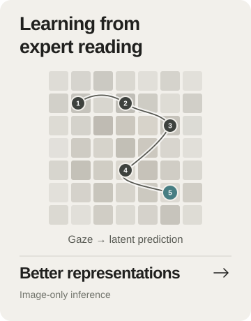
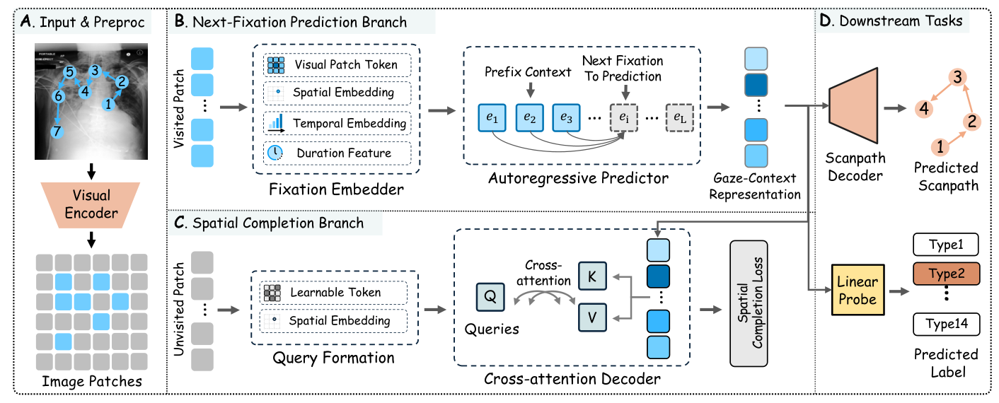
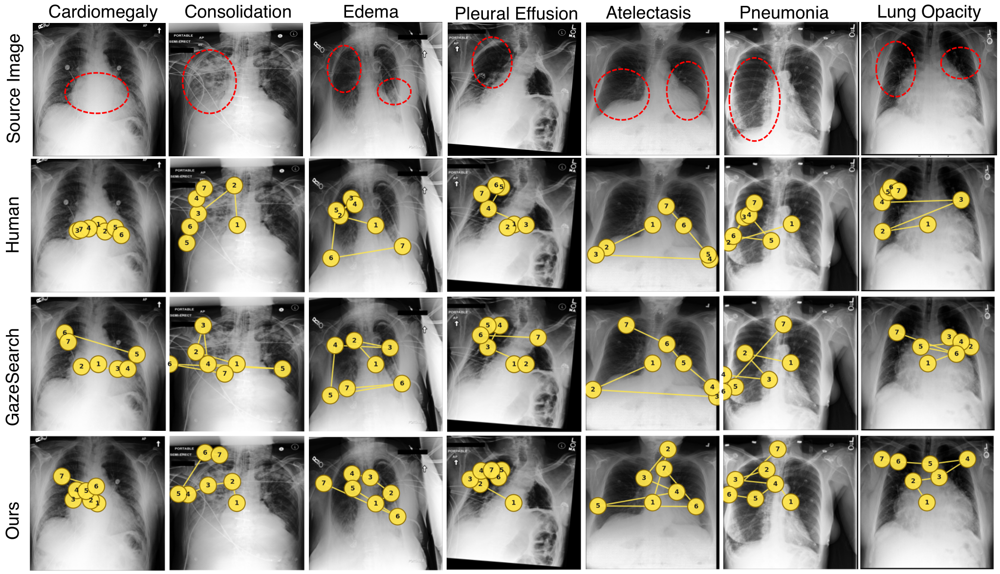

An image becomes a world
A MedCLIP-Swin encoder maps the radiograph to patch representations. Fixations specify the order in which the world is explored.
for Medical Image Representation Learning
GazeWorld learns from how radiologists read: predicting the next fixated patch and completing unvisited regions to build transferable medical image representations.

Radiologist eye movements capture how experts search, compare, and accumulate evidence. GazeWorld treats a chest radiograph as a perceptual world and the radiologist's fixation sequence as a trajectory through it. An autoregressive predictor forecasts the latent representation of the next fixated patch from the previously visited ones, while a spatial-completion branch predicts the representations of unvisited regions.
At inference, the model operates on the image alone, without gaze data. The learned frozen features support diagnostic classification on CheXpert, RSNA Pneumonia, and SIIM-ACR Pneumothorax, as well as scanpath prediction on GazeSearch. These results suggest that modeling how experts read provides a useful pretraining signal for medical image representation learning.

A MedCLIP-Swin encoder maps the radiograph to patch representations. Fixations specify the order in which the world is explored.
A causal Transformer uses the visited patches to predict the next fixated patch in latent space, with an EMA encoder supplying the targets.
A spatial-completion branch predicts representations of unvisited regions, giving the model a learning signal beyond the gaze trajectory.
Gaze guides pretraining. At inference, GazeWorld uses the image alone, and its frozen representations transfer to diagnostic classification and scanpath probing.
Play the sequence or move the slider to explore how visited patches become context for the next prediction. This is a conceptual illustration, not a live model output.
Each numbered point marks a visited patch. Their order gives the model a sequential context.
The autoregressive branch predicts the next fixation's representation in latent space.
The spatial-completion objective extends learning to regions outside the observed trajectory.
The sequence shown here is schematic. Published predictions are shown in the gallery below.
Human gaze · GazeSearch · GazeWorld

Reported results on diagnostic classification and expert scanpath prediction. Switch tasks and label fractions to explore the full comparisons.
Explore the implementation, reproduce the experiments, and use expert reading as a new signal for representation learning.
Explore the code↗MIT-licensed code. Datasets and pretrained backbone weights are obtained separately; configure local paths before running.
git clone https://github.com/levyisthebest/gazeworld.git
cd gazeworld
conda create -n gazeworld python=3.9 -y
conda activate gazeworld
pip install -r requirements.txt@article{li2026gazeworld,
title = {A World Model of Radiologist Reading for
Medical Image Representation Learning},
author = {Li, Yiwei and Wu, Zihao and Zhao, Huaqin
and Zhou, Yifan and Cao, Chao and Zhu, Dajiang
and Liu, Tianming and Zhao, Lin},
journal = {arXiv preprint arXiv:2605.23992},
year = {2026}
}